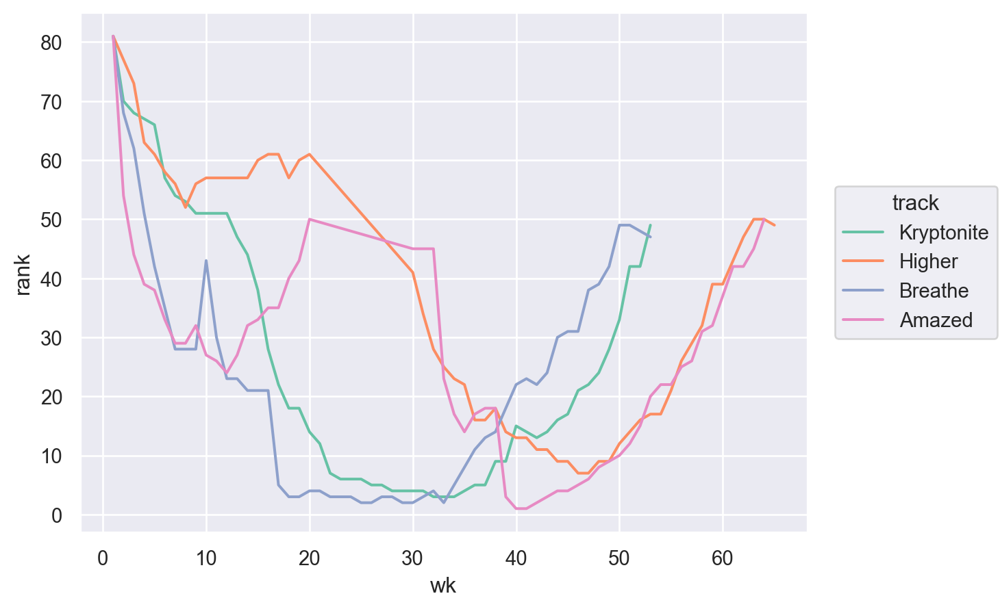
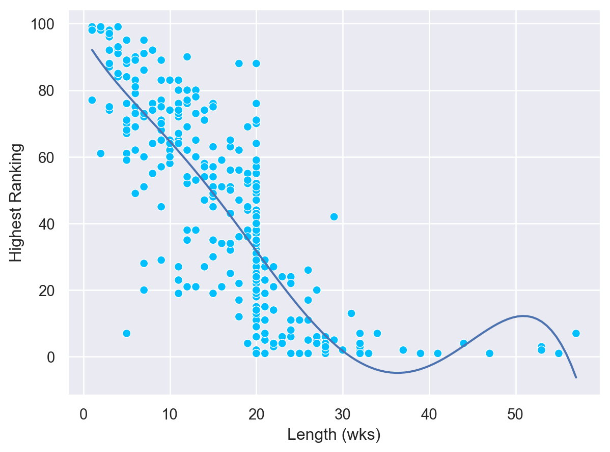
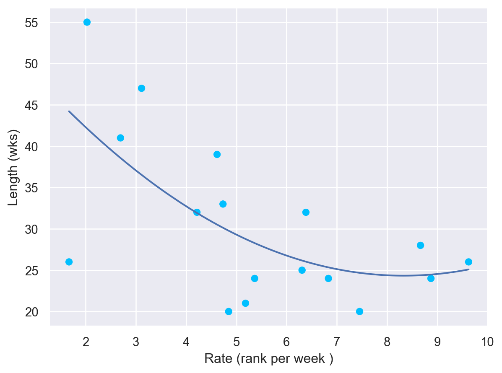

Load Packages
# numerical calculation & data frames
import numpy as np
import pandas as pd
# visualization
import matplotlib.pyplot as plt
import seaborn as sns
import seaborn.objects as so
# statistics
import statsmodels.api as sm# numerical calculation & data frames
import numpy as np
import pandas as pd
# visualization
import matplotlib.pyplot as plt
import seaborn as sns
import seaborn.objects as so
# statistics
import statsmodels.api as sm# pandas options
pd.set_option("mode.copy_on_write", True)
pd.options.display.precision = 2
pd.options.display.float_format = '{:.2f}'.format # pd.reset_option('display.float_format')
pd.options.display.max_rows = 7
# Numpy options
np.set_printoptions(precision = 2, suppress=True)“billboard” in a package “tidyr”
Source: The Whitburn Project
다음 링크의 데이터는 빌보드차트에 관한 데이터입니다; 링크
date_entered)인 첫주(wk1)의 순위부터 78주(wk78)의 순위까지 기록되어 있습니다.billboard = pd.read_csv("data/billboard.csv")
billboard.head(5) artist track date_entered wk1 wk2 wk3 wk4
0 2 Pac Baby Don't Cry (Keep... 2000-02-26 87 82.00 72.00 77.00 \
1 2Ge+her The Hardest Part Of ... 2000-09-02 91 87.00 92.00 NaN
2 3 Doors Down Kryptonite 2000-04-08 81 70.00 68.00 67.00
3 3 Doors Down Loser 2000-10-21 76 76.00 72.00 69.00
4 504 Boyz Wobble Wobble 2000-04-15 57 34.00 25.00 17.00
wk5 wk6 wk7 ... wk67 wk68 wk69 wk70 wk71 wk72 wk73 wk74
0 87.00 94.00 99.00 ... NaN NaN NaN NaN NaN NaN NaN NaN \
1 NaN NaN NaN ... NaN NaN NaN NaN NaN NaN NaN NaN
2 66.00 57.00 54.00 ... NaN NaN NaN NaN NaN NaN NaN NaN
3 67.00 65.00 55.00 ... NaN NaN NaN NaN NaN NaN NaN NaN
4 17.00 31.00 36.00 ... NaN NaN NaN NaN NaN NaN NaN NaN
wk75 wk76
0 NaN NaN
1 NaN NaN
2 NaN NaN
3 NaN NaN
4 NaN NaN
[5 rows x 79 columns]artist)가 차트에 있으며, 가수별로 몇 곡(track)이 차트에 들어있는지 알아보세요. (동명이인은 없다고 가정하고)billboard.value_counts("artist")artist
Jay-Z 5
Houston, Whitney 4
Dixie Chicks, The 4
..
Hollister, Dave 1
Hot Boys 1
matchbox twenty 1
Length: 228, dtype: int64billboard.value_counts("track")track
Where I Wanna Be 2
Original Prankster 1
Separated 1
..
He Loves U Not 1
He Can't Love U 1
www.memory 1
Length: 316, dtype: int64billboard_long = (
billboard
.melt(id_vars=billboard.columns[:3], var_name="wk", value_name="rank")
.sort_values(["artist", "track"])
)
billboard_long["wk"] = billboard_long["wk"].str.replace("wk", "").astype("int64")
billboard_long.dropna(subset="rank", inplace=True)wks_50 = (
billboard_long.groupby(["artist", "track"], as_index=False)
.size()
.sort_values("size", ascending=False)
.query("size >= 50")
)
wks_50 artist track size
62 Creed Higher 57
179 Lonestar Amazed 55
121 Hill, Faith Breathe 53
2 3 Doors Down Kryptonite 535.1 먼저, 위 곡들만을 포함하도록 4번의 데이터와 원래 데이터(billboard_long)를 merge()를 이용해 추린 후, 50주 이상 머문 곡으로 필터링하세요.
wks_50_all = (
billboard_long
.merge(wks_50)
)
wks_50_all artist track date_entered wk rank size
10 3 Doors Down Kryptonite 2000-04-08 1 81.00 53.00
11 3 Doors Down Kryptonite 2000-04-08 2 70.00 53.00
12 3 Doors Down Kryptonite 2000-04-08 3 68.00 53.00
... ... ... ... .. ... ...
3015 Lonestar Amazed 1999-06-05 62 42.00 55.00
3016 Lonestar Amazed 1999-06-05 63 45.00 55.00
3017 Lonestar Amazed 1999-06-05 64 50.00 55.00
[218 rows x 6 columns]5.2 seaborn.objects를 이용해 대략 다음과 같이 주에 따른 순위의 변화를 그려보세요.
(
so.Plot(wks_50_all, x="wk", y="rank", color="track")
.add(so.Line())
.scale(color="Set2")
)
6.1 곡별로 차트에 머문 기간을 포함한 데이터
lengths = (
billboard_long
.groupby(["artist", "track"])
.size()
.reset_index(name="length")
)
lengths artist track length
0 2 Pac Baby Don't Cry (Keep... 7
1 2Ge+her The Hardest Part Of ... 3
2 3 Doors Down Kryptonite 53
.. ... ... ...
314 Ying Yang Twins Whistle While You Tw... 14
315 Zombie Nation Kernkraft 400 2
316 matchbox twenty Bent 39
[317 rows x 3 columns]6.2 곡별로 최상위 순위를 min()을 이용해 구한 데이터를
highs = (
billboard_long
.groupby(["artist", "track"])["rank"]
.min()
.reset_index(name="high")
)
highs artist track high
0 2 Pac Baby Don't Cry (Keep... 72.00
1 2Ge+her The Hardest Part Of ... 87.00
2 3 Doors Down Kryptonite 3.00
.. ... ... ...
314 Ying Yang Twins Whistle While You Tw... 74.00
315 Zombie Nation Kernkraft 400 99.00
316 matchbox twenty Bent 1.00
[317 rows x 3 columns]6.3 merge()를 이용해 합친 후
lengths_highs = pd.merge(lengths, highs)
lengths_highs artist track length high
0 2 Pac Baby Don't Cry (Keep... 7 72.00
1 2Ge+her The Hardest Part Of ... 3 87.00
2 3 Doors Down Kryptonite 53 3.00
.. ... ... ... ...
314 Ying Yang Twins Whistle While You Tw... 14 74.00
315 Zombie Nation Kernkraft 400 2 99.00
316 matchbox twenty Bent 39 1.00
[317 rows x 4 columns]6.4 seaborn.objects를 이용해 머문 기간에 따른 최상위 순위에 대한 관계를 아래와 같이 scatterplot으로 살펴보세요.
p = (
so.Plot(lengths_highs, x="length", y="high")
.add(so.Dot(color="deepskyblue", edgecolor="white"))
.add(so.Line(), so.PolyFit(5))
.label(x="Length (wks)", y="Highest Ranking")
)
p
min()과 argmin()이 필요할 수 있음apply()로 그 함수를 적용하여 구해보세요.def isranked(df, n=1):
if df["rank"].min() == n:
idx = df["rank"].argmin()
# idx2 = (df["wk"] == 1).argmax() # 항상 0
return df.iloc[[0, idx], -2:]wk_rank = (
billboard_long.groupby(["artist", "track"])
.apply(isranked)
.reset_index()
.drop(columns="level_2")
)
wk_rank artist track wk rank
0 Aaliyah Try Again 1 59.00
1 Aaliyah Try Again 14 1.00
2 Aguilera, Christina Come On Over Baby (A... 1 57.00
.. ... ... .. ...
31 Vertical Horizon Everything You Want 26 1.00
32 matchbox twenty Bent 1 60.00
33 matchbox twenty Bent 13 1.00
[34 rows x 4 columns]wk_rank.groupby(["artist", "track"]).max() wk rank
artist track
Aaliyah Try Again 14 59.00
Aguilera, Christina Come On Over Baby (A... 11 57.00
What A Girl Wants 8 71.00
... .. ...
Sisqo Incomplete 8 77.00
Vertical Horizon Everything You Want 26 70.00
matchbox twenty Bent 13 60.00
[17 rows x 2 columns]rates = (
wk_rank.groupby(["artist", "track"])
.max()
.assign(rate=lambda x: x["rank"] / x["wk"])
.reset_index()
)
rates artist track wk rank rate
0 Aaliyah Try Again 14 59.00 4.21
1 Aguilera, Christina Come On Over Baby (A... 11 57.00 5.18
2 Aguilera, Christina What A Girl Wants 8 71.00 8.88
.. ... ... .. ... ...
14 Sisqo Incomplete 8 77.00 9.62
15 Vertical Horizon Everything You Want 26 70.00 2.69
16 matchbox twenty Bent 13 60.00 4.62
[17 rows x 5 columns]lengths = billboard_long.groupby(["artist", "track"]).size().reset_index(name="length")
lengths artist track length
0 2 Pac Baby Don't Cry (Keep... 7
1 2Ge+her The Hardest Part Of ... 3
2 3 Doors Down Kryptonite 53
.. ... ... ...
314 Ying Yang Twins Whistle While You Tw... 14
315 Zombie Nation Kernkraft 400 2
316 matchbox twenty Bent 39
[317 rows x 3 columns]lengths_rates = rates.merge(lengths)
lengths_rates artist track wk rank rate length
0 Aaliyah Try Again 14 59.00 4.21 32
1 Aguilera, Christina Come On Over Baby (A... 11 57.00 5.18 21
2 Aguilera, Christina What A Girl Wants 8 71.00 8.88 24
.. ... ... .. ... ... ...
14 Sisqo Incomplete 8 77.00 9.62 26
15 Vertical Horizon Everything You Want 26 70.00 2.69 41
16 matchbox twenty Bent 13 60.00 4.62 39
[17 rows x 6 columns]p = (
so.Plot(lengths_rates, x="rate", y="length")
.add(so.Dot(color="deepskyblue"))
.add(so.Line(), so.PolyFit(2))
.label(x="Rate (rank per week )", y="Length (wks)")
)
p